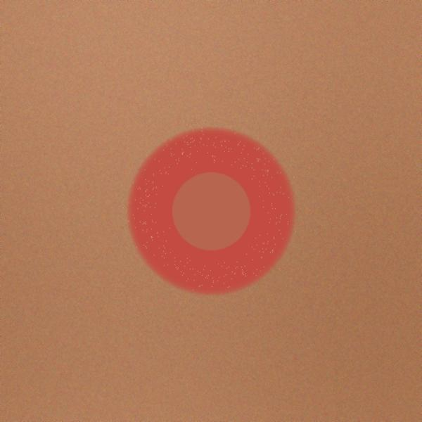
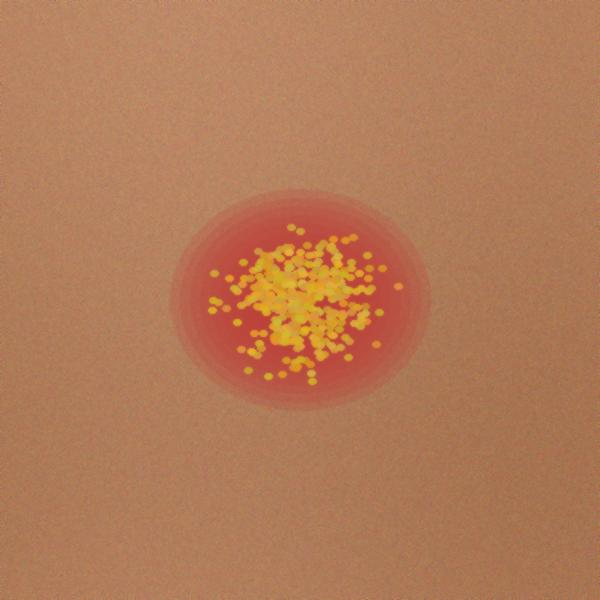
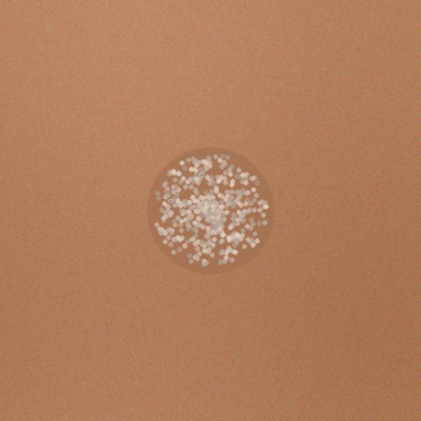
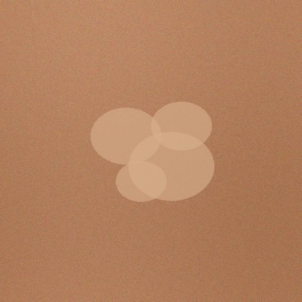
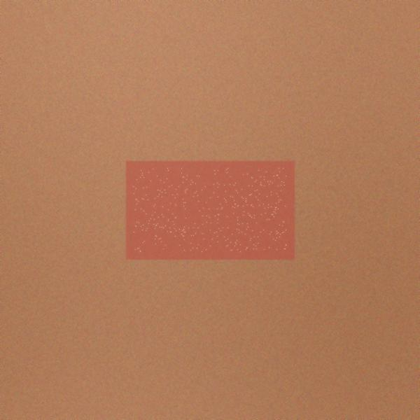
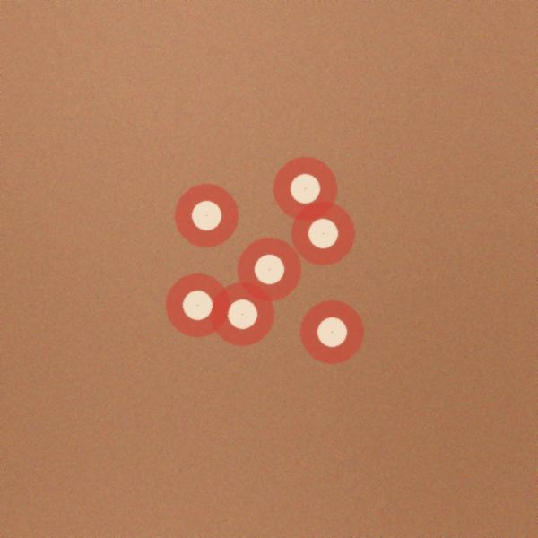

Lesion Input
Local RA 10173
Tap to Upload or Take a Photo
Auto ITA-calibrated & processed locally
RA 10173 compliant
RA 10173 compliant
Verified Presets (PH Context)
Reset

Buni (Tinea Corporis)
Fungal • Annular Ring

Mamaso (Impetigo)
Bacterial • Honey Crusts

Kulugo (Warts)
Viral • Verrucous Plaque

An-an (Tinea Versicolor)
Fungal • Hypopigmented

Alipunga (Athlete's Foot)
Fungal • Interdigital Scale

Bulutong (Chickenpox)
Viral • Umbilicated Vesicles
FUNGAL INFECTION
Buni (Tinea Corporis)
Common Local Name: Ringworm
Identified Morphological Features (Fine-Grained Cues)
Surface Texture
Active peripheral scaling with central clearing
Crust & Exudate
Absent / Dry Erythema / Non-exudative
Boundary / Edge
Sharply defined annular elevated ring
Differential Key
Distinguished from Impetigo by ring border & absence of honey crust
Diagnostic & Computational Insights
Data Privacy & Medical Disclaimer (RA 10173 Compliant)
In accordance with RA 10173 (Data Privacy Act of 2012), all skin image analysis is conducted locally without remote retention. This platform functions as an academic assistive research screening aid and does not substitute for certified clinical dermatological diagnosis. Always consult a licensed medical physician or dermatologist.
ITA Colorimetry & Adaptive CLAHE Telemetry
ITA Value
24.4°
Typology Angle
CLAHE Clip Limit
3.4
f(ITA) Dynamic
Fitzpatrick Class
TYPE IV
Melanin-Rich
Contrast Gain
+35.5%
Luminance Boost
Two-Stage Decoupled Representation Training Status
Stage 1: Localization Learning
Frozen
Spatial bounding box & edge geometry extraction. YOLOv26 CSP-Darknet backbone frozen to lock boundary features.
Stage 2: Fine-Grained Discrimination
Active Head
Discriminative feature specialization: yeast, bacterium, morphology optimized via Focal Loss for long-tail classes.
Fine-Grained Morphological Overlap Profiler
YOLOv26 Model Evaluation Metrics
Precision
92.4%
True Positive Ratio
Recall
89.1%
Sensitivity
F1-Score
0.907
Harmonic Mean
mAP50
92.2%
IoU 0.50 Threshold
mAP50-95
71.5%
COCO Evaluation Metric
Inference: 12.4 ms
Compute: 16.5 GFLOPs
Attribution: 73.1%
Spatial Bounding Box Coordinates
XMIN
142
YMIN
215
XMAX
388
YMAX
420
Differential Diagnosis Probabilities
Raw XAI Gradients Array (Final Conv Layer)
A_k = 1/Z Σ_i Σ_j (∂y^c / ∂A^k_ij)